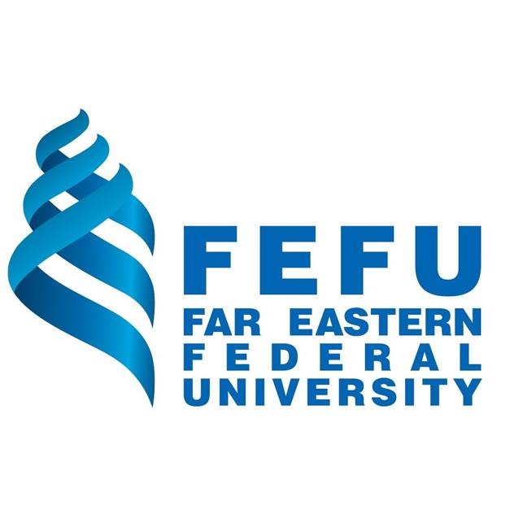
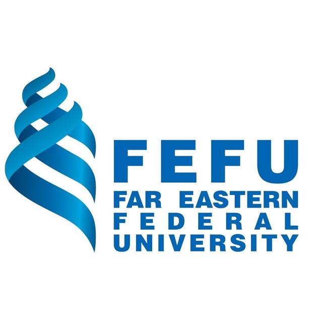

About Experience Business CS Project Activity Award
Tsinghua Global Summer School Tsinghua University Aug. 2021 and Aug. 2022Beijing, China
Overseas Youth Ambassador National Palace Museum 國立故宮博物院 Feb. 2021 - Dec. 2021Taipei, Taiwan
Delegate Harvard College Project for Asian and International Relations Jan. 2021 and Aug. 2021Boston, MA
Participant Sanofi Pharmaceutical Winter Program Jan. 2021 - Feb. 2021Taipei, Taiwan
Scholarship Holder European Forum Alpbach (EFA) Jul. 2020 - Aug. 2020Alpbach, Austria
Representative of Taiwan Northeast Asia Student Round Table Feb. 2018 - Aug. 2018Seoul, South
Representative of Taiwan Harvard College in Asia Program (HCAP) Dec. 2017 – Mar. 2018Boston, MA
Vice President NTU Taiwan-China Students Association Sep. 2016 - Jun. 2017Taipei, Taiwan
Advisor and Volunteer Teacher New York Chinese School Nov. 2022 - PresentNew York, NY
IT Volunteer Roosevelt Island Older Adult Center Nov. 2022 - Feb. 2023New York, NY
Teaching Volunteer Yunnan Teaching Program Feb. 2017 - Aug. 2017Yunnan, China
Senior English Volunteer NTU International Companions for Learning Program (ICL) Feb. 2015 - Jan. 2018Taipei, Taiwan
Docent NTU Museums - NTU History Gallery Feb. 2015 - Jan. 2017Taipei, Taiwan
Volunteer Worldwide Friend Iceland Health and Environment Project Jul. 2015 - Aug. 2015Hveragerði, Iceland
Vice President NTU International Student Information Service Club Feb. 2015 - Jun. 2017Taipei, Taiwan


 
